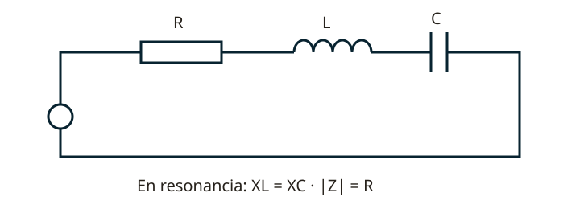

Lección 3 de 16
Corriente alterna, RLC y filtros
Relaciona frecuencia, fase y reactancia para entender la resonancia y la selección de señales.
Frecuencia, período y valores de una onda
La corriente continua conserva sentido; puede presentar variaciones de magnitud. La alterna invierte su sentido periódicamente. Frecuencia f cuenta ciclos por segundo (Hz) y período T es la duración de un ciclo: T = 1/f. Para una sinusoide sin componente continua, Vpp = 2Vp y Vrms = Vp/√2. El valor eficaz produce el mismo calentamiento que una tensión continua del mismo valor sobre una resistencia. El promedio algebraico de una sinusoide en un ciclo es cero; el promedio de su valor rectificado es 2Vp/π. Distingue estas definiciones al interpretar una pregunta.
Condensadores y bobinas
Un condensador almacena energía eléctrica: Q = CV y E = CV²/2. Su unidad es el faradio. En paralelo se suman capacidades; en serie se suman sus inversas. Un electrolítico tiene polaridad y límites de tensión y rizado. Una bobina almacena energía magnética: E = LI²/2; su inductancia se mide en henrios. Las inductancias sin acoplamiento se suman en serie. En continua estable, el condensador ideal abre el circuito y la bobina ideal se comporta como un conductor; durante el encendido hay transitorios.

Reactancia, impedancia y fase
XL = 2πfL crece con frecuencia y XC = 1/(2πfC) disminuye. En una bobina ideal la corriente atrasa 90° respecto de la tensión; en un condensador adelanta 90°; en una resistencia están en fase. La impedancia serie es Z = R + j(XL−XC) y su módulo es √[R²+(XL−XC)²]. Las tensiones reactivas se combinan con su fase; no se suman siempre como números positivos. En alterna sinusoidal, la potencia real es VrmsIrms cos φ y la aparente, VrmsIrms, en VA.
Resonancia serie y paralelo
En un LC ideal, f0 = 1/(2π√LC). En RLC serie, XL = XC en resonancia: la impedancia queda mínima e igual a R, y la corriente máxima para una tensión dada. Las tensiones de L y C pueden superar la de la fuente y se cancelan vectorialmente. En un tanque paralelo de pérdidas pequeñas, la impedancia de entrada es máxima cerca de resonancia. Las pérdidas y la carga limitan Q y desplazan el comportamiento ideal; no intercambies las conclusiones de serie y paralelo.
Selectividad y ancho de banda
Para un resonador sencillo, Q cargado = f0/BW, usando el ancho entre los puntos de media potencia. Un Q mayor implica una respuesta más estrecha, no necesariamente más potencia útil. Para RLC serie, Q = ω0L/R. La carga de la etapa siguiente reduce el Q. Una respuesta demasiado estrecha puede recortar las bandas laterales de una señal, aunque rechace mejor señales próximas.
Filtros y constantes de tiempo
Pasa bajos deja pasar frecuencias bajas; pasa altos, altas; pasa banda, un intervalo; rechaza banda o notch atenúa un intervalo. En un RC simple, fc = 1/(2πRC): a esa frecuencia la amplitud es aproximadamente 0,707 de la de paso (−3 dB). τ = RC es la constante de tiempo: tras una τ un condensador que carga desde cero alcanza cerca del 63% del cambio final. Cinco τ aproximan el estado estable. Los filtros reales tienen pendientes, pérdidas y terminaciones concretas.
Resuelve paso a paso
Calcular una resonancia
Con L = 3 µH y C = 100 pF: LC = 3 × 10⁻¹⁶; f0 ≈ 9,19 MHz. Si duplicas C con L fija, la frecuencia se divide por √2.
Resolver una impedancia
R = 30 Ω, XL = 80 Ω y XC = 40 Ω: Z = 30 + j40 Ω; |Z| = 50 Ω. Con 100 V eficaces, I = 2 A y P = I²R = 120 W. La potencia aparente es 200 VA.
Comprueba lo aprendido: Un resonador de 10 MHz tiene 100 kHz de ancho de banda. ¿Cuál es su Q cargado?
Q = 10.000 kHz / 100 kHz = 100. Usa las mismas unidades en numerador y denominador.
Preguntas oficiales de este tema
Selecciona una alternativa y pulsa «Comprobar respuesta». Si fallas, podrás ver la respuesta correcta para seguir aprendiendo. Las preguntas con incidencias documentales se muestran solo para consulta y no se califican.
Continúa tu recorrido
Fuentes de estudio: programas técnicos y banco SUBTEL, apéndices A–E, versión 06/12/2020, y sus solucionarios oficiales. Reglamentación: Decreto 523, versión 21/06/2013; evaluación: Resolución Exenta 2620/2023. Revisión documental: 11/11/2026. Explicaciones, cálculos y esquemas didácticos de RUFCOM. Consultar documentos oficiales.